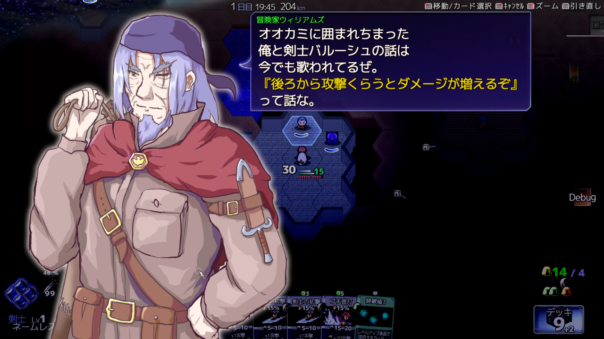

■2024-06-22 (土) 片道勇者2開発+13 第1ストーリー実装中▼
溜まっていたウディタの修正も片付いて
（と思ったそばから色々バグ報告が飛んできて
対応してる間に何度も1日がつぶれたりしつつ）、
少しずつ自分のゲーム開発にも着手できるようになってきました。
今回はウディコン準備中！
というお話と『片道勇者2』のお話です！
◆ウディコンの準備中！
そろそろ3週間前になるので第16回ウディコンの準備も始めています！
この時期にやるのはシステム改修ですね！
たとえば私(silversecond.com)みたいな野良のドメインだと、
これまでウディコン運営側からGmailさんちに
エントリー関連メールなどを送っても全部スパム扱いになっていたのですが、
今年ちょっと話題になったGmail対応のメール設定である
SPF設定だとかDKIM設定などをすればちゃんと届くようになるらしいので、
その辺りをいじったりしてました。
他にも次回コンテストに向けての記入欄の追加や反映箇所を足したり！
見えないところですが毎年地味にいじってるんですよ。
いちおうは色々動くようになったと思いますが、
また開始1～2週間くらい前になったらサンプルとして
いつも通り私の片道勇者のデータでも入れて再確認しようと思います。
しかしこういったことを話してると、
ちょっとしたWebシステム（？）を作れる人が
コンテストやるのはすごく向いてると感じます！
特に「エントリー情報修正フォーム」からの
日々の修正要請に人力で対応してたらその作業量だけでも
倒れちゃいますからね！
そういった部分をなるべく自動で処理できるようにしていくのは大事です。
◆片道勇者2 初期ストーリー作成中！
久々に『片道勇者2』にまともに着手できる日ができました。
クラス・スキル・アイテムなどのデータ作りはまだ2割くらいですが、
いったんそれは横に置いて、いったん
通しプレイができるように『第1ストーリー』を実装中です。
その過程で将来の仲間キャラの顔見せをするイベントも
入れようと思い立ち、ウキウキしながら足しています。

↑この人は冒険家ウィリアムズ。最初のストーリーで
「聖なる神殿が開いてると思ったらもう荒らされた後だったぜ」
みたいな話をしてくれます。
もしかしたら覚えておられる方もいらっしゃるかもしれませんが、
『片道勇者1』の開始時TIPSに、剣士バルーシュと
冒険家ウィリアムズという人物がオオカミと戦闘しているときに
『後ろから攻撃を受けるとダメージ1.5倍になるぞ！』
みたいな会話をするものがありました。
そのうち、剣士バルーシュの方はプラス版でNPCとして登場したのに、
冒険家ウィリアムズはどこにも出てきませんでした。かわいそう。
で、さっき『第1ストーリー』と言いましたが、
『片道勇者2』では何段階かのストーリー段階をもうけて、
進行していくにつれて色んな要素が増えていく形にする予定です。
そんなに段階数はないと思いますけどね！
最初の数段階は固定ストーリーになるので、
途中でネムリや今回のウィリアムズみたいな
将来のランダム仲間キャラと遭遇して会話する、
という形にしていきたいなと思っています。
完全ランダム遭遇だけだといまいちストーリーが作りにくくて！
ひとまず第1段階のストーリーだけ作ってみて、
ストーリーラインとしてどんなものが作れそうかの
手応えを掴んでいきたいと思います。
ストーリー別に最低限のイベントが
いくつか増えるだけでもローグライクとしては
十分なストーリー性を感じられることもあるので、
そのあたりちょっと試行錯誤してみたいですね！
トッピング程度だけでもだいぶ変わるんですよこういうの。
そして第16回ウディコンの作品募集開始まであと3週間！
まもなくです！
なんとかできそうなめどは付いてきましたので、
あとは変なタイミングで変な事故が起こらなければできると思います！
さすがに開発中の方はもうテスト段階に入ってないとヤバいかもしれません！
いちおう2025年もやるつもりですので、
待てる方は待ってくださるのも手ですよ！
（それに他にもゲームコンテストはありますしね！）
ということで、ウディコンを楽しみに待ちつつ用意を進めていきます！
2024-06-22 (土)  カテゴリ: 片道勇者2
カテゴリ: 片道勇者2
 カテゴリ: 片道勇者2
カテゴリ: 片道勇者2